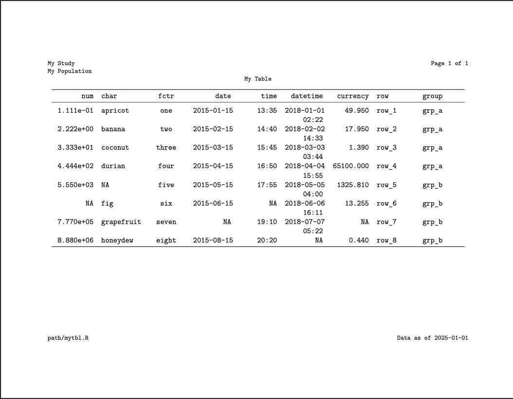

{docorator} is an engine for creating production displays from R. Specifically, {docorator} provides the following functionality:
- Decorate: Surround displays with document-level headers, footers, and page numbers
- Output: Export decorated displays to a file such as PDF or RTF
The main function, as_docorator() accepts an R object containing the display as input. For best results with sizing, the table should be prepared via {gt}, or packages that interface with {gt} such as {tfrmt}, and the figure should be prepared with {ggplot2}. Alternatively, the path to a PNG can be passed to {docorator}. Specifically, the x should be one of the following:
-
gttable -
gt_group(list ofgttables) -
ggplot2figure - list of
ggplotfigures - path to PNG file (i.e. a previously created figure)
- list of paths to PNG files
The docorator object, which is saved by default, can then be output using one or both of the following render functions which can be piped together: render_pdf() and render_rtf()
Use
# install from GitHub
devtools::install_github("GSK-Biostatistics/docorator")
# Load package
library(docorator)
# Create table (or figure)
mytbl <- gt::exibble |>
gt::gt()
# Export display
mytbl |>
as_docorator(
display_name = "mytbl",
header = fancyhead(
fancyrow(left = "My Study", center = NA, right = doc_pagenum()),
fancyrow(left = "My Population", center = NA, right = NA),
fancyrow(left = NA, center = "My Table", right = NA)
),
footer = fancyfoot(
fancyrow(left = "mypath/mytbl.R", center = NA, right = "Data as of 2025-01-01")
)
) |>
render_pdf() |>
render_rtf()